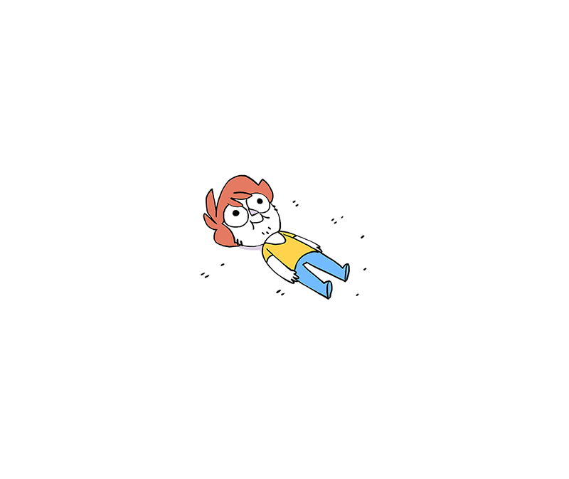
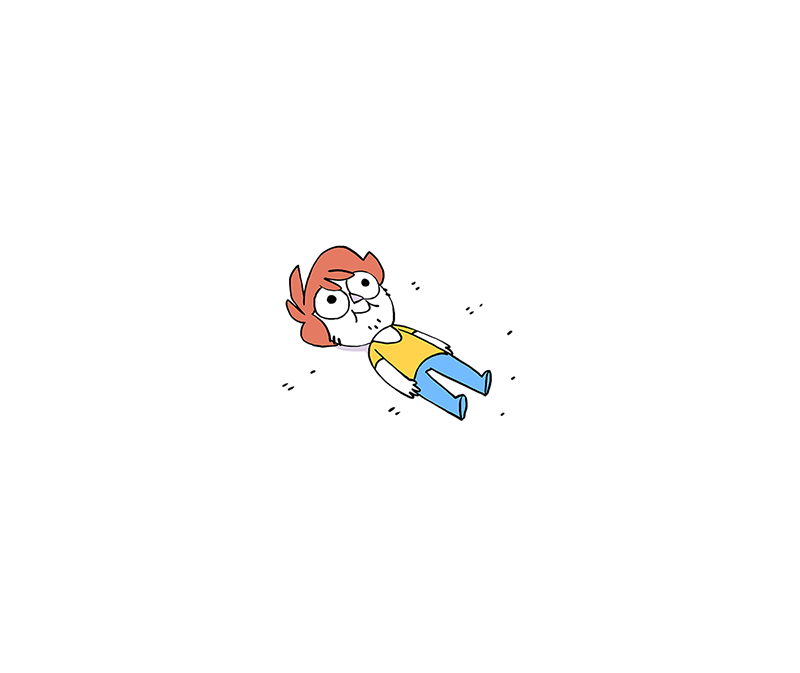
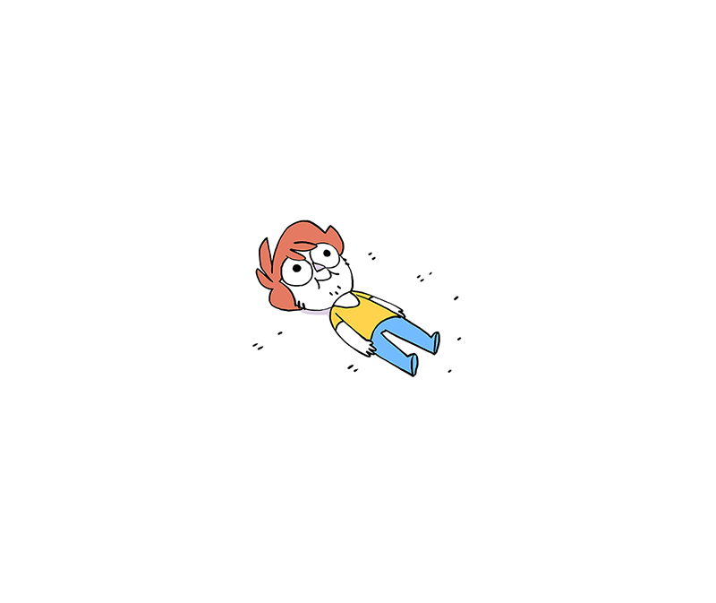

About Me
 

-------------------------------------------------------------------------------------------------------------------------------

I was born in Hayward, CA on March 25th, 2001 and given the name Karen Vanessa Zepeda.
I was born into a family
comprised of four, later growing twice the size to eight members. I have grown up my whole life
in the Bay Area
with my five sisters, parents, and my cat, Nico. I dream of becoming an astrophysicist and love
to help out with events in
my community. My favorite subject is math, I spend an abundance of my time to practice brush lettering, and love to go out
and eat with my sisters.
At this very moment the Andromeda galaxy, our neighboring galaxy, is consuming the Milky Way Galaxy, our galaxy.
This is referred to as galaxy cannabalism.
Likes: Dislikes:
- cats - tomatoes - sleep - mornings - pasta (ravoli) - waking up early - stationary - hot weather - brush lettering - disorganization - avocados - being sick - winter and spring - swimming - debating
Description of Game: Favorite Webpages:
My partner and I created a side scrolling Youtube: I spend the majority of my day simply game that follows a hungry character as watching random youtube videos. It's usually how I pass the time. Link. they race across a dinner table, collecting Netflix : Despite the somewhat limited selection of shows as many apples as possible, all while avoiding I enjoy going on netflix to binge watch tv series that they have available. Link. rotten apples and forks. Gmail : Checking on my Gmail everyday and finding new emails makes me feel important, so I genuinely enjoy opening up the webpage. Link.
Screenshot of Dinner Dash:

Day 7
Similarities Differences
- the strcuture is extremely similars - scratch has blocks, while python is handwritten - same basic outline - scratch uses 'repeat until", python uses 'while' statements - both have variables, loops, - python is case sensitive, scratch isn"t - both use booleans, "conditionals", input - python has more than the basic math operations - both can be used to calcuate simple math - scratch has a less complicated design and easier problems to useI also love astronomy ever since I was in elementary. There was just something about the world outside of our own that fascinates me. I listen to indie pop and rock music which helps me relax. My favorite book is hands down The Martian because the story was so immersive.